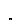

| Name | Description |
|---|---|
| Set output signal to a time varying Real expression | |
| TankWith3InletOutletArraysWithEvaporatorCondensor | Tank with Heating and Evaporation |
|  InnerTank | |
| Controller | |
| Init | Enumeration to define initialization options |
| TankWithTopPorts | Tank with inlet/outlet ports and with inlet ports at the top |
| Name | Description |
|---|---|
| Time varying input signal | |
| u | Set value of Real input |
| Name | Description |
|---|---|
| Time varying input signal | |
| u | Set value of Real input |
This tank has the same geometric variables as TankWith3InletOutletArrays plus the feature of a HeatPort and the possibility of evaporation. (Assumption: The gas is condensed immediately afterwards so that a liquid boiling fluid is created.)
The tank can be initialized with the following options:
Full steady state initialization is not supported, because the corresponding initial equations for temperature/enthalpy are undetermined (the flow rate through the port at steady state is zero).
| Name | Description |
|---|---|
| replaceable package Medium | Medium in the component |
| crossArea | Tank area [m2] |
| top_pipeArea[n_TopPorts] | Area of outlet pipe [m2] |
| side_pipeArea[n_SidePorts] | Area of outlet pipe [m2] |
| bottom_pipeArea[n_BottomPorts] | Area of outlet pipe [m2] |
| height | Height of Tank [m] |
| V0 | Volume of the liquid when the level is zero [m3] |
| side_heights[n_SidePorts] | |
| bottom_heights[n_BottomPorts] | |
| top_heights[n_TopPorts] | |
| p_ambient | Tank surface pressure [Pa] |
| T_ambient | Tank surface Temperature [K] |
| n_TopPorts | number of Top connectors |
| n_SidePorts | number of side connectors |
| n_BottomPorts | number of bottom connectors |
| min_level_for_heating | |
| Initialization | |
| level_start | Initial tank level [m] |
| initType | Initialization option |
| use_T_start | Use T_start if true, otherwise h_start |
| T_start | Start value of temperature [K] |
| h_start | Start value of specific enthalpy [J/kg] |
| X_start[Medium.nX] | Start value of mass fractions m_i/m [kg/kg] |
| Assumptions | |
| Heat transfer | |
| replaceable model HeatTransfer | Wall heat transfer |
| Name | Description |
|---|---|
| replaceable package Medium | Medium in the component |
| BottomFluidPort[n_BottomPorts] | |
| TopFluidPort[n_TopPorts] | |
| SideFluidPort[n_SidePorts] | |
| Condensed | |
| heatPort | |
| Assumptions | |
| Heat transfer | |
| replaceable model HeatTransfer | Wall heat transfer |
| Name | Description |
|---|---|
| replaceable package Medium | Medium in the component |
| Xi[Medium.nXi] | Actual mass fractions of fluid in tank [kg/kg] |
| Name | Description |
|---|---|
| replaceable package Medium | Medium in the component |
| port |
| Name | Description |
|---|---|
| w_dilution | |
| w_concentrate | |
| startTime | |
| T5_batch_level |
| Name | Description |
|---|---|
| sensors | |
| actuators |
Integer type that can have the following values (to be selected via choices menu):
| Types.Init. | Meaning |
|---|---|
| GuessValues | GuessValues -- Guess values (not fixed) for p, T or h, X, C |
| InitialValues | Initial values for p, T or h, X, C |
| SteadyStateMomentum | Steady state momentum |
| SteadyStateHydraulic | Hydraulic steady state (der(p)=0), guess value for p, initial values for T or h, X, C |
| SteadyState | Steady state (guess values for p, T or h, X, C) |
Model of a tank that is open to the environment at the fixed pressure
p_ambient.
The tank is filled with a single or multiple-substance liquid,
assumed to have uniform temperature and mass fractions.
At the top of the tank over the maximal fill level height a vector of FluidPorts, called topPorts, is present. The assumption is made that fluid flows always in to the tank via these ports (and never back in to the connector).
The vector of connectors ports are fluid ports at the bottom and side of the tank at a definable height. Fluid can flow either out of or in to this port. The fluid level of the tank may be below one of these ports. This case is approximated by introducing a large pressure flow coefficient so that the mass flow rate through this port is very small in this case.
If the tank starts to over flow (i.e., level > height), an assertion is triggered.
When the diagram layer is open in the plot environment, the level of the tank is dynamically visualized. Note, the speed of the diagram animation in Dymola can be set via command animationSpeed(), e.g., animationSpeed(speed = 10)
Extends from Modelica.Fluid.Interfaces.PartialLumpedVolume (Lumped volume with mass and energy balance).
| Name | Description |
|---|---|
| height | Maximum level of tank before it overflows [m] |
| crossArea | Area of tank [m2] |
| V0 | Volume of the liquid when level = 0 [m3] |
| replaceable package Medium | Medium in the component |
| fluidVolume | Volume [m3] |
| portsData[nPorts] | Data of inlet/outlet ports at side and bottom of tank |
| Assumptions | |
| Ambient | |
| p_ambient | Tank surface pressure [Pa] |
| T_ambient | Tank surface Temperature [K] |
| Dynamics | |
| energyDynamics | Formulation of energy balance |
| massDynamics | Formulation of mass balance |
| Heat transfer | |
| use_HeatTransfer | = true to use the HeatTransfer model |
| replaceable model HeatTransfer | Wall heat transfer |
| Initialization | |
| level_start | Start value of tank level [m] |
| p_start | Start value of pressure [Pa] |
| use_T_start | = true, use T_start, otherwise h_start |
| T_start | Start value of temperature [K] |
| h_start | Start value of specific enthalpy [J/kg] |
| X_start[Medium.nX] | Start value of mass fractions m_i/m [kg/kg] |
| C_start[Medium.nC] | Start value of trace substances |
| Advanced | |
| Port properties | |
| hysteresisFactor | Hysteresis for empty pipe = diameter*hysteresisFactor |
| stiffCharacteristicForEmptyPort | =true, if steep pressure loss characteristic for empty pipe port |
| zetaLarge | Large pressure loss factor if mass flows out of empty pipe port |
| m_flow_small | Regularization range at zero mass flow rate [kg/s] |
| Name | Description |
|---|---|
| topPorts[nTopPorts] | Inlet ports over height at top of tank (fluid flows only from the port in to the tank) |
| ports[nPorts] | inlet/outlet ports at bottom or side of tank (fluid flows in to or out of port; a port might be above the fluid level) |
| heatPort | |
| Assumptions | |
| Heat transfer | |
| replaceable model HeatTransfer | Wall heat transfer |